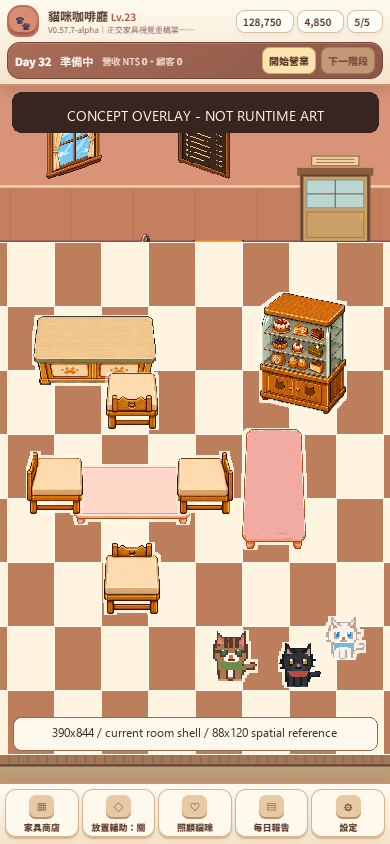
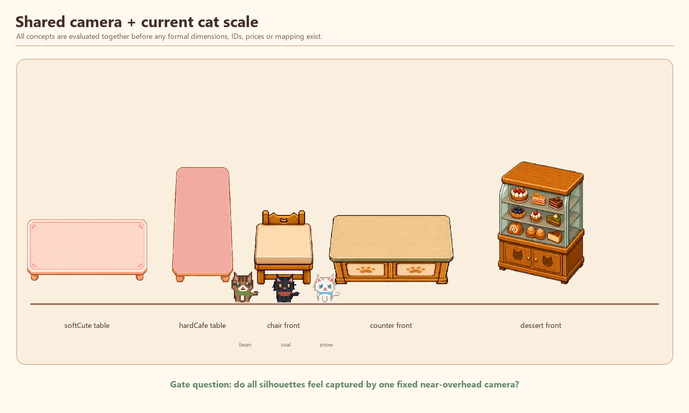
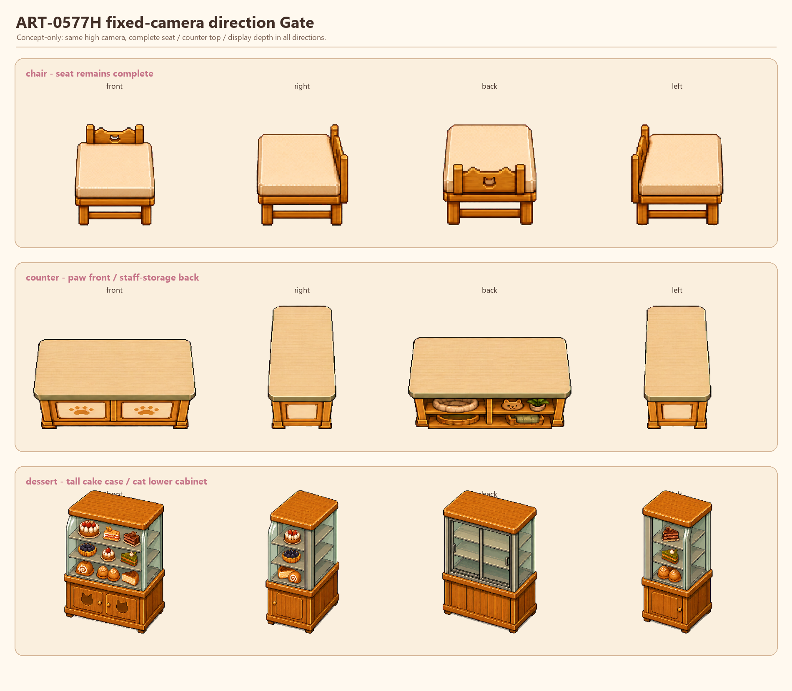
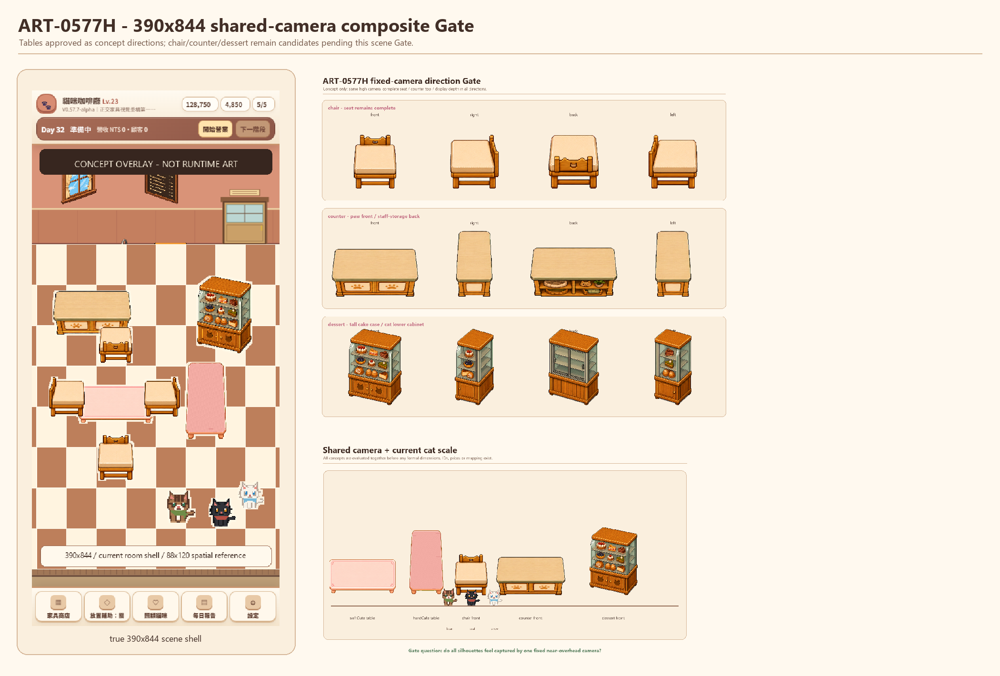

ART-0577H｜390×844 共用鏡頭場景合成 Gate
概念驗收稿，不是 Runtime 截圖，不代表正式尺寸、ID、價格、mapping 或 PNG 核准。
Runtime 基線維持 V0.57.7-alpha / 0577e。兩款桌子的產品與視角方向已部分核准；chair、counter、dessert 等待本頁場景 Gate 判定。




概念驗收稿，不是 Runtime 截圖，不代表正式尺寸、ID、價格、mapping 或 PNG 核准。
Runtime 基線維持 V0.57.7-alpha / 0577e。兩款桌子的產品與視角方向已部分核准；chair、counter、dessert 等待本頁場景 Gate 判定。



